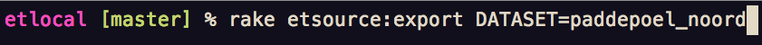
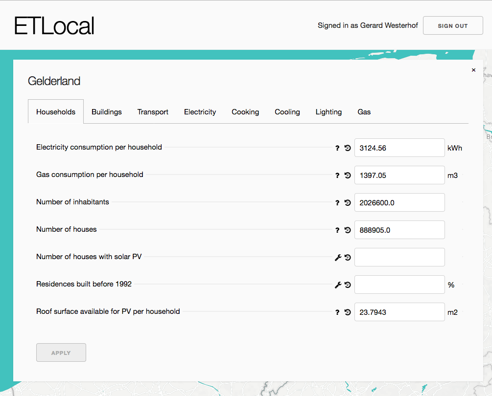
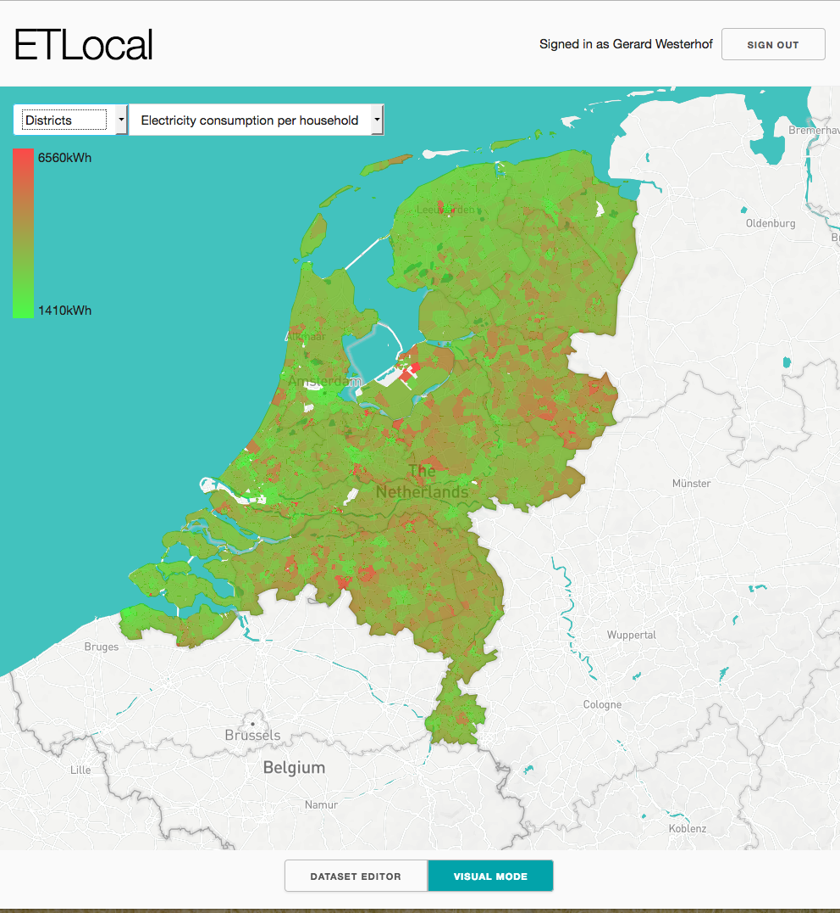
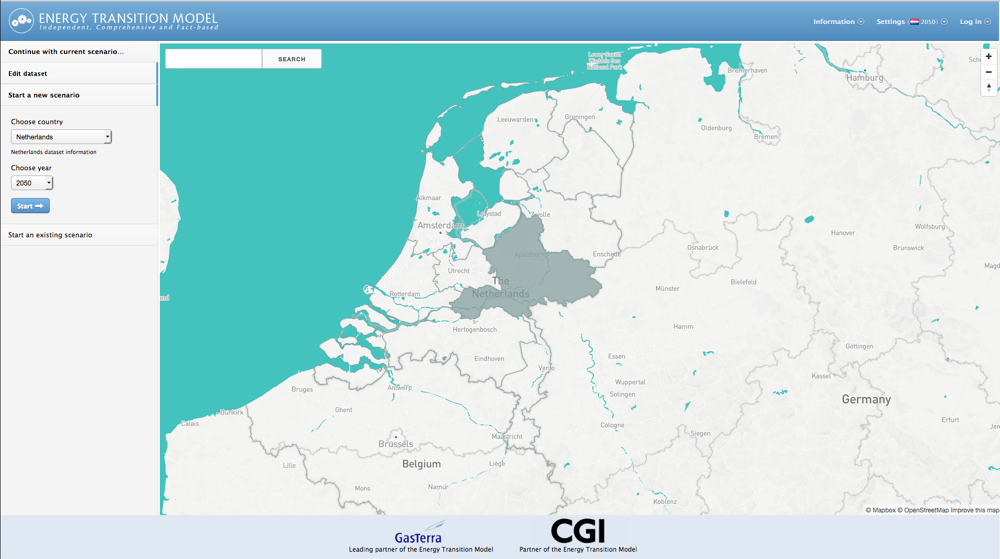
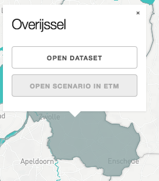

class: center, middle # ETLocal ## 22-05 | Backlog 'grooming' --- # Agenda 1. Huidige status 2. Volgende stappen 3. Besluiten --- # Huidige status ETLocal bestaat nu uit de volgende onderdelen: 1. Analyzer 2. Editor 3. Visuele modus --- # Analyzer Analyzer (`rake etsource:export`)  --- # Editor  --- # Visuele modus  --- class: center, middle # Volgende stappen --- # Volgende stappen 1. Integratie ETModel 2. Analyzes uitbreiden 3. Visualisaties uitbreiden 4. Eigen inbreng --- # Integratie ETModel  --- # Integratie ETModel  - Werkend maken "Open scenario in ETM" --- # Integratie ETModel + Geen dubbele onderhoudskosten interfaces + Gemakkelijk scenarios aanmaken met eigen buurt/wijk/gemeente + Koppeling datasets ETLocal → ETEngine → ETModel + Ontdubbeling ETSource --- # Analyzes uitbreiden + Vervangt 2 slides in de slecht onderhouden local datasets research Excel + ETLocal kan gebruikt worden als tool voor maken local datasets + Analyzes draaien vanuit de interface --- # Visualisaties uitbreiden + Potentiele klant wil dit? @Chael + Welke nieuwe gegevens zijn dit? → Trello :) --- class: center, middle # Eigen inbreng --- class: center, middle # Besluiten --- # Besluiten - Alle lokale datasets worden voortaan gemaakt met ETLocal - Sprints worden opgedeeld in 50/50 integratie ETModel / uitbreiden analyzes - Mochten visualisaties ineens hoge prio krijgen (een klant) dan gaat dat voor - De volgende backlog 'grooming' is op 19 juni - Iedereen is vrij om tickets toe te voegen aan het backlog van ETLocal (Deze is te vinden op Trello) --- class: center, middle # Zeh end